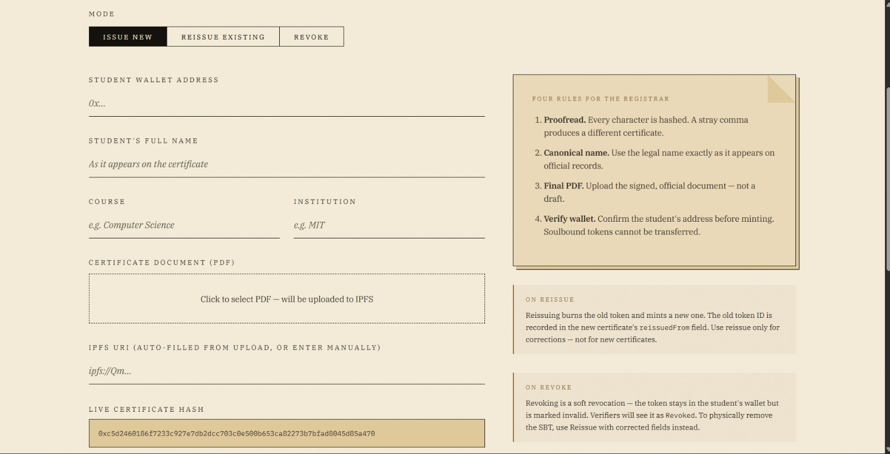
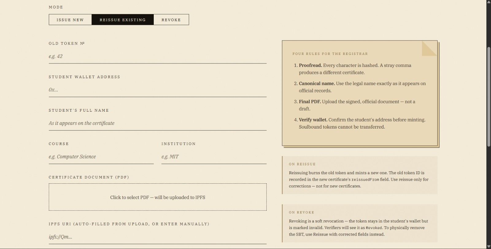
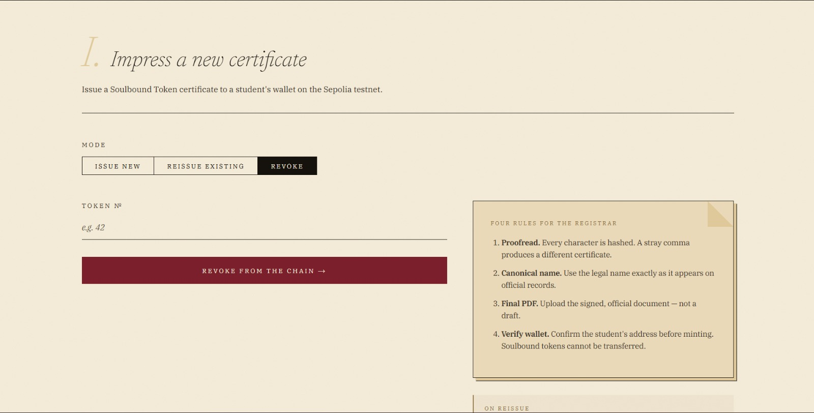

The Institution’s Surface
The institution’s surface is a single page with three modes. Issue mints a new soulbound token. Reissue burns the old token and mints a corrected one — with the lineage preserved on-chain. Revoke flips a flag without burning.

Student wallet, four fields, a PDF. The live keccak256 fingerprint updates as the
registrar types — the same digest the contract will compute. One MetaMask signature
impresses the certificate upon the chain.

Old token id plus corrected fields. The contract burns the old token, mints a new one, and
writes replacedBy[old] = new — so a verifier presenting the stale
hash gets a deterministic “revoked, replaced by N” rather than a dead end.

A soft revoke. The token stays in the student’s wallet but the revoked flag
flips. Verifiers see valid = false, revoked = true. Use Reissue when the
certificate must be physically replaced.
replacedBy link — correctness without amnesia.